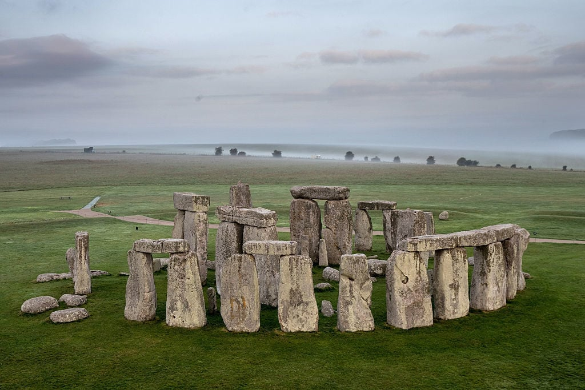
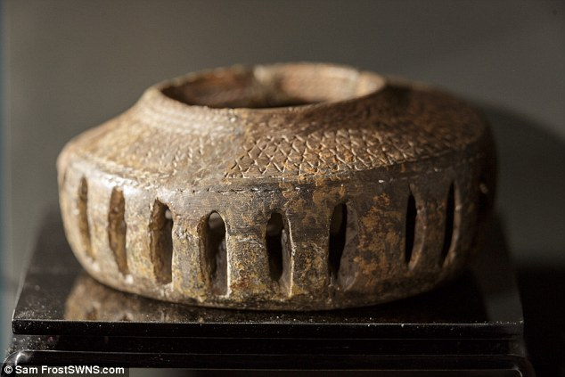
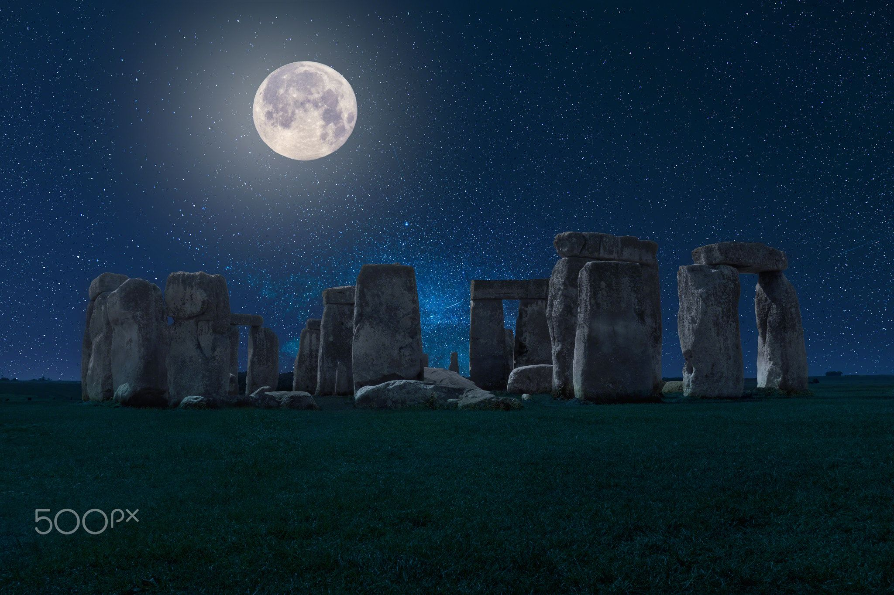

Stone henge is located England which is north of Salisbury plain. The place consisted of 2 types of rocks; one being called Sarsen( the larger rocks) and the other being bluestone rock ( the smaller rocks). The Sarsen rocks they were said to weigh 20-30 tons and the bluestone rocks were said to weight 2-5 tons
Stonehenge was said to have formed around 3000 BC where a circular ditch was initially made consisting of 100 meters in diameter. Then, the stone were imported starting with the large rocks on the outer circle and then the smaller rocks in the inner circle. Lastly the stones were then erected upright resulting in Stonehenge.

The route the sarsens rocks covered around 230 kilometres of land so it was speculated that at the time large wooden rollers or wooden tracks were used to transport the rocks and then wooden pulleys were used to pull the rocks upright.
It was believed that the barrows near Stonehenge were a place where famous individuals were buried such as priests and chieftains. At the time they were to be buried alongside priceless artifacts.


Stonehenge used concave and convex grooves to lock the stones in place and considering this was done 1000s of years, shows the level of intelligence the civilisation had at the time to achieve this feat.
No one really knows what or why Stonehenge exists. The only way and the most exciting way to truly understand the mystery is to see it with your own eyes. Who knows? Perhaps it may reveal its secrets to you.